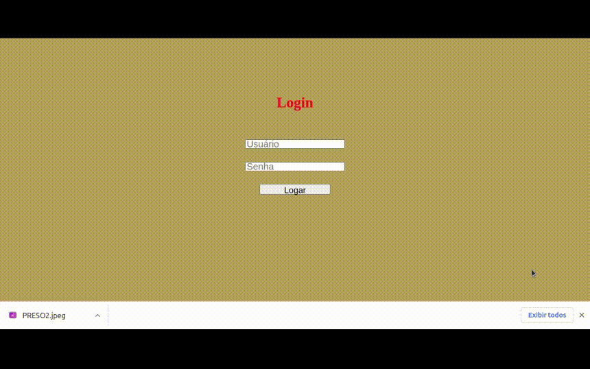

Nishi Consult
O sistema Nishi Consult tem como finalidade realizar o cadastro de
pessoas detidas.
Cada registro de detento pode ser consultado por usuários comuns ou inserido e
editado por usuários master. Além disso, o usuário master tem a capacidade de cadastrar novos
usuários no banco de dados.
Para a implementação deste projeto, foram empregadas as tecnologias:
HTML, CSS, JavaScript, Node.js e MySQL.
Abaixo, apresentamos um gif ilustrando o funcionamento do sistema.

Cada registro de detento pode ser consultado por usuários comuns ou inserido e
editado por usuários master. Além disso, o usuário master tem a capacidade de cadastrar novos
usuários no banco de dados.
Para a implementação deste projeto, foram empregadas as tecnologias:
HTML, CSS, JavaScript, Node.js e MySQL.
Abaixo, apresentamos um gif ilustrando o funcionamento do sistema.